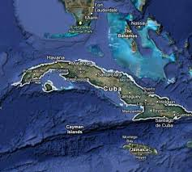

Republika Kuby (nazwa oficjalna República de Cuba) – państwo w Ameryce Środkowej położone na Morzu Karaibskim w archipelagu Wielkich Antyli. Państwo to składa się z wyspy o nazwie Kuba oraz szeregu otaczających ją mniejszych wysepek, z których największą jest Isla de la Juventud. Stolicą Kuby jest Hawana, a największe miasta to: Santiago de Cuba, Camagüey, Holguin, Guantánamo, Santa Clara.
Kuba to największa z wysp karaibskich, a na liście największych wysp świata zajmuje 16. miejsce. Otoczona jest 1600 wysepkami, skałami i rafami (największa wyspa Isla de la Juventud, do 1978 r. nazywająca się Pinos – 3056 km²). Otaczające Kubę głębiny morskie sięgają 7000 m. Od Florydy oddziela ją Cieśnina Florydzka, od Meksyku – Cieśnina Jukatańska, od San Domingo – Cieśnina Zawietrzna. Brzegi dobrze rozwinięte obfitują w liczne zatoki. Okoliczne wyspy tworzą archipelagi takie jak: Jardines de la Reina, Los Canarreos, Los Colorados, Sabana-Camagüey. Większość wyspy zajmuje nizina. W południowo-zachodniej części wznoszą się wapienne góry Sierra de los Organos. Wzdłuż południowych wybrzeży ciągnie się łańcuch gór Sierra Maestra z najwyższym szczytem Kuby – Pico Turquino (1974 m). Klimat podzwrotnikowy, z przeciętną sumą opadów 1000–1500 mm. Pora deszczowa występuje między majem a październikiem. Średnie temperatury wynoszą w styczniu 20–24 °C, w gorącym sierpniu 25–28 °C. Jesienią dość często występują huragany. Główne miasta: Hawana, Santiago de Cuba, Guantánamo, Bayamo, Santa Clara, Cienfuegos, Holguín, Camagüey, Pinar del Río, Matanzas, Las Tunas, Trinidad. Na największej wyspie, Kubie, płynie ponad 200 rzek, jednak ich łączna długość nie przekracza 2500 km. Od czasu masowych wyrębów lasów przez Hiszpanów i wprowadzenia na równinach monokultur rolniczych, ilość wody w rzekach gwałtownie zmalała. Największa rzeka Kuby, Rio Cauto, która była żeglowna jeszcze przez dziesiątki lat po osiedleniu się tu Europejczyków, jest dzisiaj płytka i ledwie co płynie.
| Język urzędowy | hiszpański |
| Stolica | Hawana |
| Ustrój polityczny | republika socjalistyczna |
| Głowa państwa | Przewodniczący Rady Państwa>Raul Modesto Castro Ruz |
| Szef rządu | Przewodniczący Rady Ministrów |
| Powierzchnia |
105. na świecie 110 860 km2 ~0% |
| Liczba ludności(2012) |
73. na świecie 11 163 934 102 osób/km2 |
| Jednostka monetarna | peso kubańskie (CUP) |
| Niepodległość | spod okupacji USA 20 maja 1902 |
| Religia dominująca | katolicyzm |